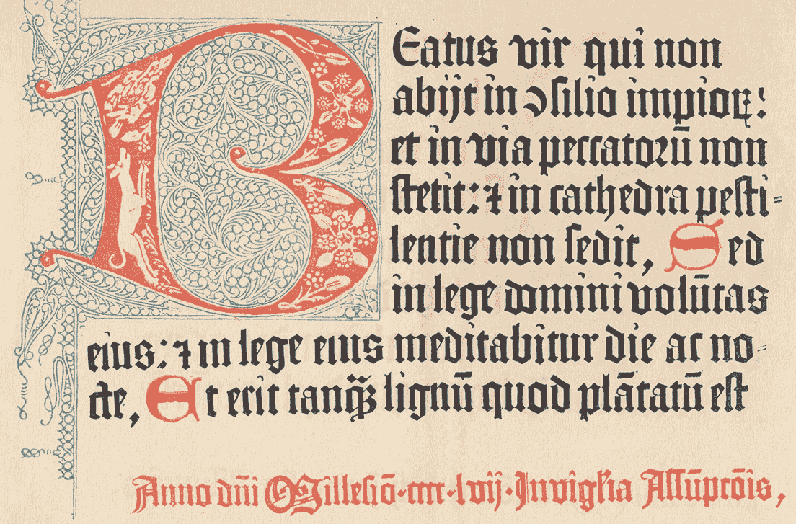

Find links to the source code and associated dependencies
Corpus View Details
Read below to learn about the methods used to generate the corpus view.
The corpus view visualizes the degree to which each poem within the corpus imitates earlier poems and influences later poems. To perform these measurements, the corpus is processed in the following way:
Each poem is split into a list of stanzas. For each stanza, the number of times each possible three character sequence {'aaa', 'aab', ... 'zzz'} occurs is counted. These counts are then used to perform an Approximate Nearest Neighbors search that determines the passages that are most similar to a given passage. Each passage is then compared to its nearest neighbors using Python's Difflib.Sequencematcher() function, and these scores are used to represent passage-level similarities. Given these similarity scores, each poem's similarity to earlier and later works is then calculated as follows:
For each segment of each poem, the nearest neighbors are divided into those that were published before the given work and those that were published after the given work. The similarity scores of the nearest neighbors published before and after the given work are then summed (respectively). These summed values are then divided by the number of segments in the text, and this quotient is divided in turn by the number of nearest neighbors considered for each passage. The resultng values are then used to represent the degree to which the given work resembles earlier and later works.
Passage View Details
Read below to learn about the methods used to generate the passage view.

The passage view visualizes the passages that are most similar to each passage in the corpus. Each passage from a user-specified poem is analyzed to find its most similar passages, and each of those similar passages is visualized as a point in the plot. The similarity scores are calculated as follows:
Each poem is split into a list of stanzas. For each stanza, the number of times each possible three character sequence {'aaa', 'aab', ... 'zzz'} occurs is counted. These counts are then used to perform an Approximate Nearest Neighbors search that determines the passages that are most similar to a given passage. Each passage is then compared to its nearest neighbors using Python's Difflib.Sequencematcher() function, and these scores are used to represent passage-level similarities.
Source Code
Read below for links to the project's source code and associated dependencies.